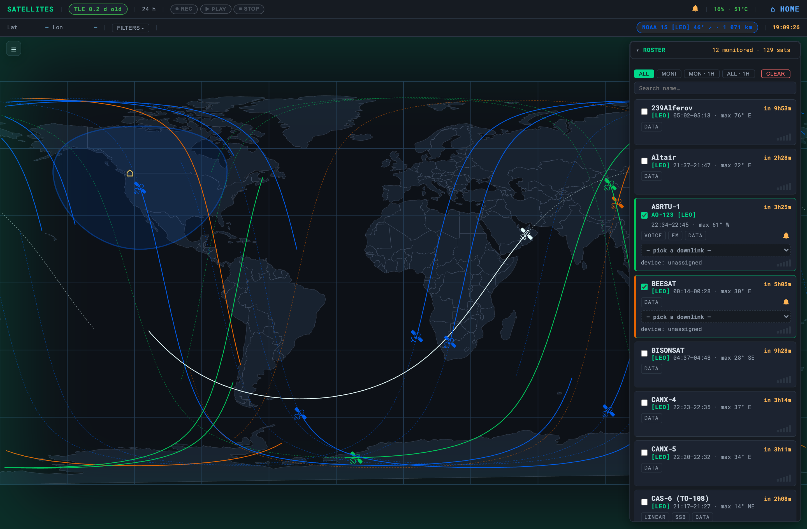

Satellites
Offline pass prediction, sky tracks, and RTL-SDR listening for the birds overhead

The Satellites page at /server/satellites/ answers one
question offline: which birds are workable or receivable from here, now and
soon? It predicts passes, draws the ground track and sky path, animates the
satellite live, alerts you before a pass, and — with an RTL-SDR — can
listen to a selected downlink. The prediction core is pure math and
needs no radio at all; listening is an optional layer on top.
Prediction is hardware-free and always available. Listening needs an RTL-SDR and a Pi 4 / 4 GB or better; the sky-plot and timeline run happily on lighter boxes. It needs your station lat/lon to compute look-angles.
The roster
The right panel is the roster — every satellite OASIS knows about, sorted by next
pass. Each row shows the acquisition time, max elevation (higher is a
better pass), a countdown, and mode badges (VOICE, FM, DATA, APRS,
SSTV, LINEAR, SSB…). A small bar meter on each row is the workability
pill, propagated live in the browser with satellite.js so it moves without
a server round-trip.
| Control | What it does |
|---|---|
| ALL / MONITORED | Show the whole roster, or just the birds you ticked to monitor. |
| MON·1H / ALL·1H | Narrow to passes inside the next hour. |
| Category chips (WEATHER, VOICE, FM, APRS, SSTV, LINEAR, SSB, DATA, CREWED) | Filter by what the bird carries. |
| Band chips (VHF, UHF, L-BAND) | Filter by downlink band — e.g. show only what your antenna and dongle can hear. |
| Search box | Find a satellite by name. |
| Row checkbox | Add the bird to your monitored set (drives the 1H filters and pass alerts). |
The roster itself is built offline by services/satellites/build-roster.py,
which aggregates SatNOGS transmitter data and CelesTrak
orbital groups into configuration/satellites.json (names, categories,
downlink frequencies, modes). Orbits come from a TLE cache refreshed
roughly every three days when the box has internet, via the offline manifest. The
TLE age pill in the header shows how stale the elements are —
predictions drift as TLEs age.
Passes & tracks
Selecting a bird computes its passes with Skyfield on the server and draws them: a polar sky plot (where it rises, culminates, and sets) and a ground track over the world map, with the satellite animated along it. This is served by the satellites API:
| Endpoint | Returns |
|---|---|
GET /api/satellites | The roster with per-bird TLE lines and mode support tags. |
GET /api/satellites/passes | Predicted passes for the station over the window. |
GET /api/satellites/track | Ground-track points for the selected bird. |
POST /api/satellites/select | Set the selected / monitored birds. |
POST /api/satellites/refresh | Re-sync TLEs (when online) and rebuild look-angles. |
Listening (RTL-SDR)
With a dongle, the REC / PLAY / STOP controls capture a selected bird’s downlink — live-stream the pass audio to the browser over SSE, or record it to a WAV for offline decoding (e.g. a NOAA/Meteor weather pass for later APT / LRPT work). Demodulation follows the transmitter mode automatically:
- FM / APRS → wide FM. VHF/UHF Doppler stays inside the FM passband, so FM birds need no active retuning.
- CW → USB with a 700 Hz tone offset; USB / LSB / SSB → SSB. These are narrowband and more Doppler-sensitive.
- PSK / LRPT / DVB — capturable, but not live-demodulable in the browser; record and decode offline.
Listen needs the dongle to itself. Exactly like the
tuning bench and ADS-B, stop
the APRS SDR feed first. Recordings are safety-capped at
20 minutes and written to
configuration/sat-recordings/ (per-machine, gitignored).
Troubleshooting
| Symptom | Cause & fix |
|---|---|
Roster loads but every row says Lat – Lon – / no pass times |
No station position. Set your lat/lon (the GPS card or configuration/station.json); look-angles can’t be computed without it. |
| TLE age pill is red / high | Elements are stale and predictions drift. Press refresh (or hit POST /api/satellites/refresh) while online; TLEs auto-sync ~every 3 days via the offline manifest. |
| Roster is empty | configuration/satellites.json is missing. Rebuild it: python3 services/satellites/build-roster.py (uses vendored SatNOGS/CelesTrak data offline). |
| Passes look right but times are hours off | Clock skew. Satellite math is time-critical — set up GPS time sync so the Pi’s clock is disciplined without internet NTP. |
skyfield / numpy import error in the log |
The prediction wheels weren’t installed. They ship in the bundle but must be in the manifest’s pip groups — reinstall the satellites feature from the setup menu. |
| REC does nothing / “dongle busy” | Another consumer holds the RTL-SDR. Stop aprs-sdr-feed.service and any ADS-B, then try again. Listening needs a Pi 4 / 4 GB or better. |